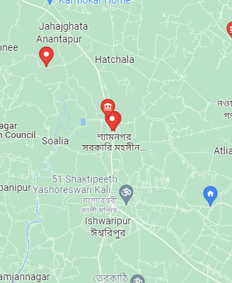

শ্যামনগর ইউনিয়নের
নকিপুর হরিচরন রায় বাহাদুর শ্যাম সুন্দর পরিবেশের ভিক্তিতে শ্যামনগর উপজেলার একটি ঐতিহ্যবাহী অঞ্চল হলো শ্যামনগর সদর ইউনিয়ন ।কাল পরিক্রমায় আজ শ্যামনগর ইউনিয়ন শিক্ষা, সংস্কৃতি, ধর্মীয় অনুষ্ঠান, খেলাধুলা সহ বিভিন্ন ক্ষেত্রে তার নিজস্ব স্বকীয়তা আজও সমুজ্জ্বল।
এক নজরে শ্যামনগর ইউনিয়নের মৌলিক তথ্য

| আয়তন – ৩৪.৫৫ (বর্গ কিঃ মিঃ) | লোকসংখ্যা – ৩৩৭৫৫ জন |
| গ্রামের সংখ্যা – ২৭টি | মৌজার সংখ্যা – ৯টি |
| হাট/বাজার সংখ্যা -৩ টি | শিক্ষার হার – ৬৭% |
| সরকারী প্রাথমিক বিদ্যালয়- ০১১টি | বে-সরকারী রেজিঃ প্রাঃ বিদ্যালয়- ০৫টি, |
| উচ্চ বিদ্যালয়ঃ ৪টি, | মাদ্রাসা- ৩টি। |
| কলেজ-৩টি | দায়িত্বরত চেয়ারম্যান –শেখ লিয়াকত আলী বাবু |
| গুরুত্বর্পূণ ধর্মীয় স্থান- ৪ টি |